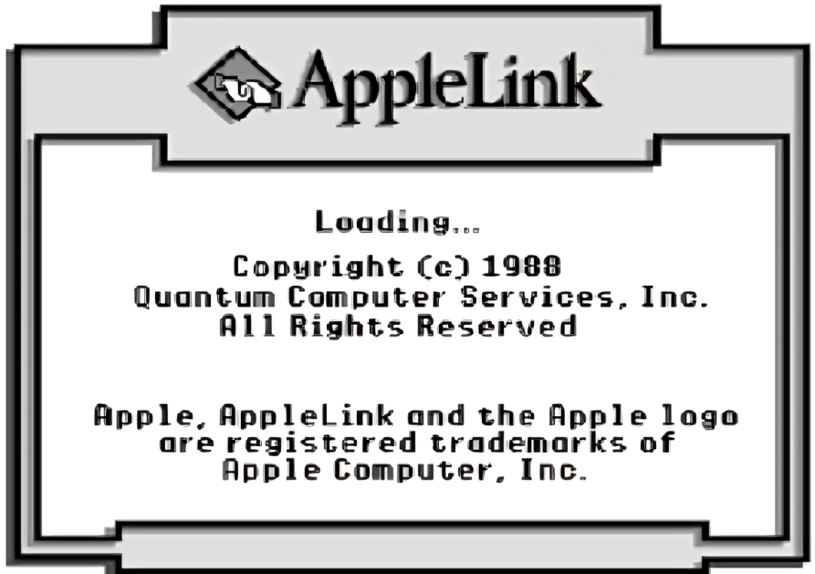
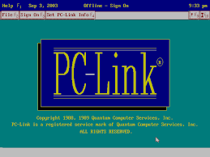

Uno dei primi imprenditori che diedero impulso all’innovazione digitale fu William Ferdinand Von Meister.
Von Meister, secondo Micheal Schrage sul Washington Post, era “un imprenditore patologico, talmente pazzo che la follia finiva per confondersi con l’idea, tanto profondo era il loro intreccio”. Egli si rivelò capace di individuare nuove prospettive e raccogliere denaro dai venture capitalist, ma poi incapace nella gestione. Nel 1978, quando le aziende precedenti gli erano venute a noia, Von Meister combinò il suo interesse per i telefoni, i computer e i network di informazione per dare vita ad un servizio denominato “The Source”. The Source collegava via telefono gli home computer ad un network che metteva a disposizione bacheche elettroniche, scambi di messaggi, quotazioni di Borsa e tanti altri argomenti.
Era insomma, uno dei primi servizi online orientati al consumatore: “Arrivate con il vostro computer in qualsiasi parte del mondo” recitava una brochure pubblicitaria. The Source era pensata per creare comunità, offrendo forum, chat room e aree per lo scambio privato di file. Ben presto, Von Meister iniziò a dilapidare denaro e a gestire male l’impresa, che poco dopo fu venduta a CompuServe. Nonostante la sua breve esistenza, The Source ebbe un ruolo cruciale nello sviluppo dell’era dell’online, insegnando che ai consumatori interessava anche potersi collegare con amici e generare propri contenuti.
L’idea successiva di Von Meister fu un music store per vendere musica in streaming, che ben presto (a causa dei negozi di dischi e delle case discografiche che fecero barriera) si evolse verso un settore ancora più popolare: i videogiochi. Così nacque la “Control Video Corporation” (CVC), che grazie al nuovo servizio di Von Meister, chiamato “GameLine”, permetteva agli utenti di scaricare videogiochi, comprandoli o affittandoli, oltre a beneficiare di alcuni servizi informativi un tempo disponibili su The Source. Nel Dicembre del 1982, Steve Case, un imprenditore di marketing appassionato all’ormai fallita The Source, iniziò a lavorare per la CVC di Von Meister, che però pochi mesi dopo si trovò sull’orlo della bancarotta. Von Meister non aveva ancora imparato a gestire gli affari con prudenza.
Storico logo di America Online dal 1991 al 2005.
La CVC divenne “Quantum”, quando Jim Kimsey entrò a far parte dell’azienda come amministratore delegato: la Quantum riuscì a farsi strada nel mondo della commercializzazione dei servizi online, prendendo il nome di “America Online”.
All’inizio degli anni ‘80, Jim Kimsey fu invitato ad entrare nella CVC come amministratore delegato. Egli riorganizzò la società, dandole il nome di “Quantum”, che nel 1985 lanciò un servizio chiamato “Q-Link”, destinato a chi usava apparecchi Commodore. Per 10 dollari al mese, Q-Link offriva notizie, giochi, previsioni, e tanto altro; ma l’area più popolare era “People Connection”, uno spazio pieno di bacheche elettroniche e chat room. Data la crescita delle vendite di concorrenti come Apple, Case, dopo aver ottenuto una scrivania negli spazi dell’azienda, riuscì a concludere un accordo con il suo servizio clienti, creando “Apple-Link”.

Similmente accadde con la Tandy, per lanciare “PC-Link”.
Case, tuttavia, si rese conto che la strategia di offrire servizi esclusivi con nomi distinti andasse rivista. La soluzione fu ispirata dall'approccio software di Bill Gates: i servizi online sarebbero stati disgiunti dall’hardware e resi in grado di funzionare con qualsiasi tipo di computer. Così nacque “America Online”, entrata in servizio come “AOL”. Gli utenti vennero chiamati non “clienti” o “iscritti”, ma “membri”.